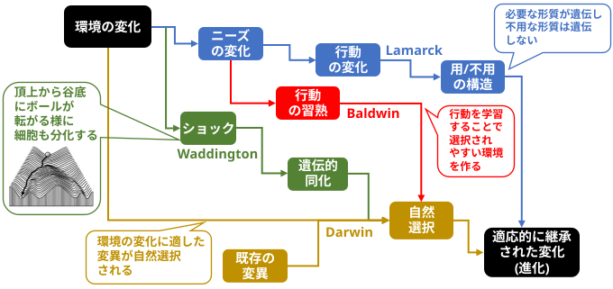

The assumption that acquired characteristics are not inherited is often taken to imply that the adaptations that an organism learns during its lifetime cannot guide the course of evolution. This inference is incorrect (Baldwin, 1896). Learning alters the shape of the search space in which evolution operates and thereby provides good evolutionary paths towards sets of co-adapted alleles. We demonstrate that this effect allows learning organisms to evolve much faster than their nonlearning equivalents, even though the characteristics acquired by the phenotype are not communicated to the genotype.
獲得形質は遺伝しないという前提は、しばしば、生物が個体の一生を通じて学習した適応が進化の過程を導くことはできない、ということを意味すると解釈されがちである。しかし、この推論は誤りである（Baldwin, 1896）。学習は、進化が作用する探索空間の形状を変化させ、それによって、相互に適応した対立遺伝子の組み合わせへと至る良好な進化の経路を提供する。我々は、この効果により、表現型が獲得した形質が遺伝子型に伝達されるわけではないにもかかわらず、学習を行う生物は学習を行わない同種の生物よりもはるかに速く進化できることを実証する。
ついでに･･･

Lamark (ラマルク) 説も完全に否定された訳ではない模様。
●『Paternal exercise enhances offspring endurance through sperm microRNAs』(2025)
(父親の運動は精子マイクロRNAを介して子孫の持久力を高める)